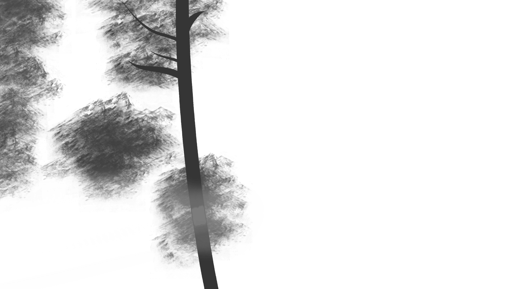
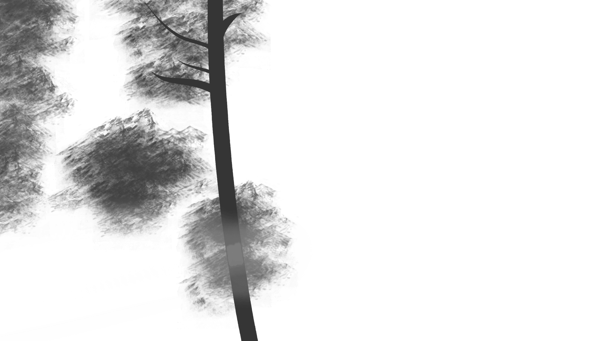
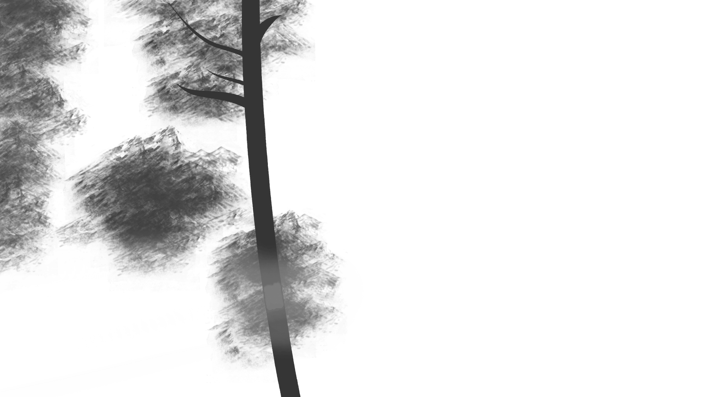

Victor Hugo Amador

I'm doing good
I'm on some new shit
Been saying "yes" instead of "no"
I thought I saw you at the bus stop
I didn't though
I hit the ground running each night
I hit the Sunday matinée
You know the greatest films of all time
Were never made
I guess you never know, never know
And if you wanted me, you really should've showed
And if you never bleed, you're never gonna grow
And it's alright now
But we were something,
Don't you think so?
roaring twenties,
Tossing pennies in the pool
And if my wishes came true
It would've been you
In my defense
I have none
For never leaving well enough alone
But it would've been fun
If you would've been the one
I had this dream
You're doing cool shit
Having adventures on your own
You meet some woman on the internet
And take her home
We never painted by the numbers, baby
But we were making it count
You know the greatest loves of all time are over now
I guess you never know, never know
And it's another day waking up alone
Chorus
I persist and resist the temptation to ask you
If one thing had been different
Would everything be different today?
We were something, don't you think so?
Rosé flowing
With your chosen family
And it would've been sweet
If it could've been me
In my defense I have none
For digging up the grave another time
But it would've been fun
If you would've been the one
Vintage tee, brand new phone
High heels on cobblestones
When you are young, they assume you know nothing
Sequin smile, black lipstick
Sensual politics
When you are young, they assume you know nothing
But I knew you
Dancin' in your Levi's
Drunk under a streetlight
I knew you
Hand under my sweatshirt
Baby, kiss it better
And when I felt like I was an old cardigan under
someone's bed
You put me on and said I was your favorite
A friend to all is a friend to none
Chase two girls, lose the one
When you are young, they assume you know nothing
But I knew you
Playing hide-and-seek and
Giving me your weekends
I knew you
Your heartbeat on the High Line
Once in twenty lifetimes
And when I felt like I was an old cardigan under
someone's bed
You put me on and said I was your favorite
To kiss in cars and downtown bars
Was all we needed
You drew stars around my scars
But now I'm bleeding
Cause I knew you
Stepping on the last train
Marked me like a bloodstain
I knew you
Tried to change the ending
Peter loosing Wendy
I knew you
Leaving like a father
Running like water
When you are young, they assume you know nothing
But I knew you'd linger like a tattoo kiss
I knew you'd haunt all of my what-ifs
The smell of smoke would hang around this long
Cause I knew everything when I was young
I knew I'd curse you for the longest time
Chasing shadows in the grocery line
I knew you'd miss me once the thrill expired
And you'd be standin' in my front porch light
And I knew you'd come back to me
You'd come back to me
And you'd come back to me
And you'd come back
And when I felt like I was an old cardigan
Under someone's bed
You put me on and said I was your favorite
Rebekah rode up on the afternoon train
It was sunny
Her saltbox house on the coast
Took her mind off St. Louis
Bill was the heir to the Standard Oil name
And money
And the town said
"How did a middle-class divorcée do it?"
The wedding was charming
If a little gauche
There's only so far new money goes
They picked out a home and called it "Holiday House"
Their parties were tasteful
If a little loud
The doctor had told him to settle down
It must have been her fault his heart gave out
And they said
"There goes the last great American dynasty
Who knows, if she never showed up
what could've been
There goes the maddest woman this town has ever seen
She had a marvelous time ruinin' everything"
Rebekah gave up on the Rhode Island set
Forever
Flew in all her Bitch Packin' friends from the city
Filled the pool with champagne and swam with the big names and blew
through the money on the boys and the ballet
And losing on card game bets with Dalí
And they said
"There goes the last great American dynasty"
Who knows, if she never showed up
what could've been
There goes the most shameless woman this town has ever seen
She had a marvelous time ruinin' everything
They say
She was seen on occasion
Pacing the rocks, staring out at the midnight sea
And in a feud with her neighbor she stole his dog and dyed it key lime green
50 years is a long time
Holiday House sat quietly on that beach
Free of women with madness, their men and bad habits
Then it was bought by me
Who knows, if I never showed up, what could've been
There goes the loudest woman this town has ever seen
I had a marvelous time ruinin' everything
I had a marvelous time
Ruining everything
A marvelous time
Ruining everything
A marvelous time
I had a marvelous time
I want you to know
I'm a mirrorball
I'll show you every version of yourself tonight
I'll get you out on the floor
Shimmering beautiful
And when I break it's in a million pieces
Hush
When no one is around, my dear
You'll find me on my tallest tiptoes
Spinning in my highest heels, love
Shining just for you
Hush
I know they said the end is near
But I'm still on my tallest tiptoes
Spinning in my highest heels, love
Shining just for you
I want you to know
I'm a mirrorball
I can change everything about me to fit in
You are not like the regulars
The masquerade revelers
Drunk as they watch my shattered edges glisten
Chorus
And they called off the circus
Burned the disco down
When they sent home the horses
And the rodeo clowns
I'm still on that tightrope
I'm still trying everything
to get you laughing at me
I'm still a believer
But I don't know why
I've never been a natural
All I do is try, try, try
I'm still on that trapeze
I'm still trying everything
To keep you looking at me
Because I'm a mirrorball
I'm a mirrorball
I'll show you every version of yourself
Tonight
Green was the color of the grass
Where I used to read at Centennial Park
I used to think I would meet somebody there
Teal was the color of your shirt
when you were sixteen at the yogurt shop
You used to work at to make a little money
Time
Curious time
Gave me no compasses
Gave me no signs
Were there clues I didn't see?
And isn't it just so pretty to think
All along there was some
Invisible string
Tying you to me
Bad was the blood of the song in the cab on your first trip to LA
You ate at my favorite spot for dinner
Bold was the waitress on our three year trip getting
lunch down by the Lakes
She said I looked like an American singer
Time
Mystical time
Cutting me open, then healing me fine
Were there clues I didn't see?
And isn't it just so pretty to think
All along there was some
Invisible string
Tying you to me
A string that pulled me out
of all the wrong arms
right into that dive bar
Something wrapped all of my
past mistakes in barbed wire
Chains around my demons
Wool to brave the seasons
One single thread of gold tied me to you
Cold was the steel of my axe to grind
For the boys who broke my heart
Now I send their babies presents
Gold was the color of the leaves when I
showed you around Centennial Park
Hell was the journey but it brought me heaven
Time
Wondrous time
Gave me the blues and then purple pink skies
And it's cool
Baby with me
And isn't it just so pretty to think
All along there was some
Invisible string
Tying you to me?